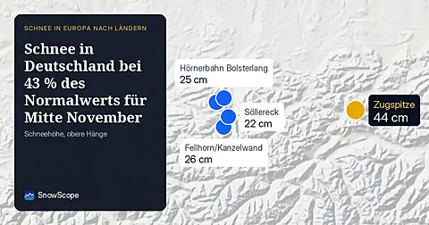

Schneebericht Deutschland: Schneehöhen, Neuschnee und die Woche
In Deutschland sind heute rund 10.730 km² Bergland weiß, 23 % der kartierten Berge und Hügel des Landes. Das sind 7.660 km² mehr als gestern. Das schneereichste Skigebiet ist Zugspitze mit 81 cm auf den oberen Hängen. Bis zu 16 cm Neuschnee könnten in der kommenden Woche auf die schneereichsten Hänge fallen.
Die Live-Schneeprognose für Zugspitze in der SnowScope-AppSchneehöhen, Pulverschnee-Alarme und 3D-Karte, gratis.Heute auf einen Blick
| Weiße Fläche | 10.730 km² |
|---|---|
| Anteil am Bergland | 23 % |
| Max. Neuschnee in 24 h | 11 cm |
| Max. Neuschnee in 3 Tagen | 23 cm |
| Nächste 3 Tage (schneereichste Hänge) | 9 cm |
| Nächste 7 Tage | 16 cm |
| Meist weiß ab | 800 m |
| Skigebiete mit Schnee oben | 112 von 231 |
Die letzten sieben Tage
Am 16. November waren rund 2.110 km² weiß, heute sind es 10.730 km².
Die Schneedecke wuchs in diesen Tagen um 8.620 km².
Der stärkste Dreitagesschneefall des Zeitraums erreichte 23 cm (bis 22. November).
Diese Saison im Vergleich zu einem normalen Jahr
4 der 5 schneereichsten Skigebiete liegen über ihrer üblichen Schneehöhe für den 22. November.
Zugspitze: 30 cm auf etwa 1.811 m, ein normales Jahr hat 22 cm; Steibis: 15 cm auf etwa 1.282 m, ein normales Jahr hat 12 cm; Fellhorn/Kanzelwand: 23 cm auf etwa 1.442 m, ein normales Jahr hat 14 cm; Grasgehren: 23 cm auf etwa 1.555 m, ein normales Jahr hat 15 cm; Hörnerbahn Bolsterlang: 7 cm auf etwa 1.274 m, ein normales Jahr hat 12 cm.
Diese Höhen gelten für eine Höhenlage jedes Bergs unterhalb des Gipfels.
In früheren Wintern kam der beste Schnee in Zugspitze meist Anfang März / Ende März.
Die schneereichsten Skigebiete heute
Zugspitze führt mit 81 cm auf den oberen Hängen.
Es folgen Steibis (46 cm), Fellhorn/Kanzelwand (43 cm), Grasgehren (43 cm) und Hörnerbahn Bolsterlang (43 cm).
| Skigebiet | Oben | Neu, 3 Tage | Nächste 3 Tage | Gipfel |
|---|---|---|---|---|
| Zugspitze | 81 cm | 39 cm | 13 cm | 2.627 m |
| Steibis | 46 cm | 39 cm | 11 cm | 1.704 m |
| Fellhorn/Kanzelwand | 43 cm | 41 cm | 13 cm | 1.965 m |
| Grasgehren | 43 cm | 39 cm | 11 cm | 1.674 m |
| Hörnerbahn Bolsterlang | 43 cm | 39 cm | 11 cm | 1.662 m |
Wo der Schnee als Nächstes kommt
In den nächsten drei Tagen werden auf den schneereichsten Hängen bis zu 9 cm erwartet, über die Woche bis zu 16 cm.
Der schneereichste Tag dürfte der Donnerstag, 26. November werden, mit bis zu 9 cm.
In den letzten drei Tagen fiel der meiste Neuschnee in die Allgäuer Alpen, die Bayerischen Alpen und der Schwarzwald.
Die zweite Woche könnte dort, wo es am meisten schneit, bis zu 18 cm bringen.
Schnee nach Höhe
Höhe für Höhe: 500-1.000 m: im Schnitt 0 cm, 17 % weiß; 1.000-1.500 m: im Schnitt 7 cm, 94 % weiß; 1.500-2.000 m: im Schnitt 19 cm, 100 % weiß; 2.000-2.500 m: im Schnitt 27 cm, 100 % weiß.
Ab etwa 800 m ist der Boden meist weiß.
Eine Reise planen
Über 1.000 m ist der Boden fast ganz weiß (94 % bedeckt): Die Pisten dort haben eine durchgehende Unterlage.
Die Skigebiete mit den höchsten Liften sind die sicherste Wahl: Zugspitze (2.627 m), Fellhorn/Kanzelwand (1.965 m) und Steibis (1.704 m).
Tag für Tag
- Sonntag, 22. November · 10.730 km² weiß, bis zu 23 cm Neuschnee in drei Tagen, vorn Zugspitze (81 cm)
- Samstag, 21. November · 3.050 km² weiß, bis zu 18 cm Neuschnee in drei Tagen, vorn Zugspitze (81 cm)
- Freitag, 20. November · 1.790 km² weiß, bis zu 10 cm Neuschnee in drei Tagen, vorn Fellhorn/Kanzelwand (44 cm)
- Donnerstag, 19. November · 1.820 km² weiß, bis zu 6 cm Neuschnee in drei Tagen, vorn Zugspitze (53 cm)
- Mittwoch, 18. November · 1.510 km² weiß, bis zu 4 cm Neuschnee in drei Tagen, vorn Zugspitze (43 cm) · Deutschland: 29 cm Schneefall in der nächsten Woche prognostiziert, Höhepunkt am 25. November
- Dienstag, 17. November · 1.470 km² weiß, bis zu 2 cm Neuschnee in drei Tagen, vorn Zugspitze (53 cm)
- Montag, 16. November · 2.110 km² weiß, bis zu 2 cm Neuschnee in drei Tagen, vorn Zugspitze (44 cm) · Schnee in Deutschland bei 43 % des Normalwerts für Mitte November
Fragen und Antworten
Liegt in Deutschland gerade Schnee?
Ja. Rund 10.730 km² Bergland sind weiß, 23 % der kartierten Berge. Das schneereichste Skigebiet ist Zugspitze mit 81 cm auf den oberen Hängen.
Wo liegt in Deutschland heute am meisten Schnee?
Zugspitze führt mit 81 cm auf den oberen Hängen. Es folgen Steibis (46 cm), Fellhorn/Kanzelwand (43 cm) und Grasgehren (43 cm).
Schneit es in Deutschland diese Woche?
In den nächsten drei Tagen werden auf den schneereichsten Hängen bis zu 9 cm erwartet, über die Woche bis zu 16 cm. Der schneereichste Tag dürfte der Donnerstag, 26. November werden, mit bis zu 9 cm.
Ab welcher Höhe liegt in Deutschland Schnee?
Ab etwa 800 m ist der Boden meist weiß.
Wie viel Neuschnee fiel in Deutschland in den letzten drei Tagen?
Bis zu 23 cm auf den schneereichsten Hängen, davon 11 cm in den letzten 24 Stunden. Mindestens 5 cm fielen auf rund 4.170 km². In den letzten drei Tagen fiel der meiste Neuschnee in die Allgäuer Alpen, die Bayerischen Alpen und der Schwarzwald.
Wie viele Skigebiete in Deutschland haben Schnee?
112 der 231 beobachteten Skigebiete haben heute oben Schnee. Schnee oben heißt nicht, dass die Lifte laufen: vorher beim Skigebiet nachsehen.
Wann ist die beste Zeit zum Skifahren in Deutschland?
In früheren Wintern kam der beste Schnee in Zugspitze meist Anfang März / Ende März.
Ist die Saison in Deutschland gut gestartet?
4 der 5 schneereichsten Skigebiete liegen über ihrer üblichen Schneehöhe für den 22. November.
Artikel über Deutschland

Deutsche Berge bekommen bedeutende Schneefälle über sieben Tage, bis zu 29 cm möglich. Daten vom 18. November.

Die Alpen in Deutschland zeigen gerade 43 % der normalen Schneetiefe in den überwachten Skigebieten am 16. November, deutlich hinter dem Plan für den Saisonstart.